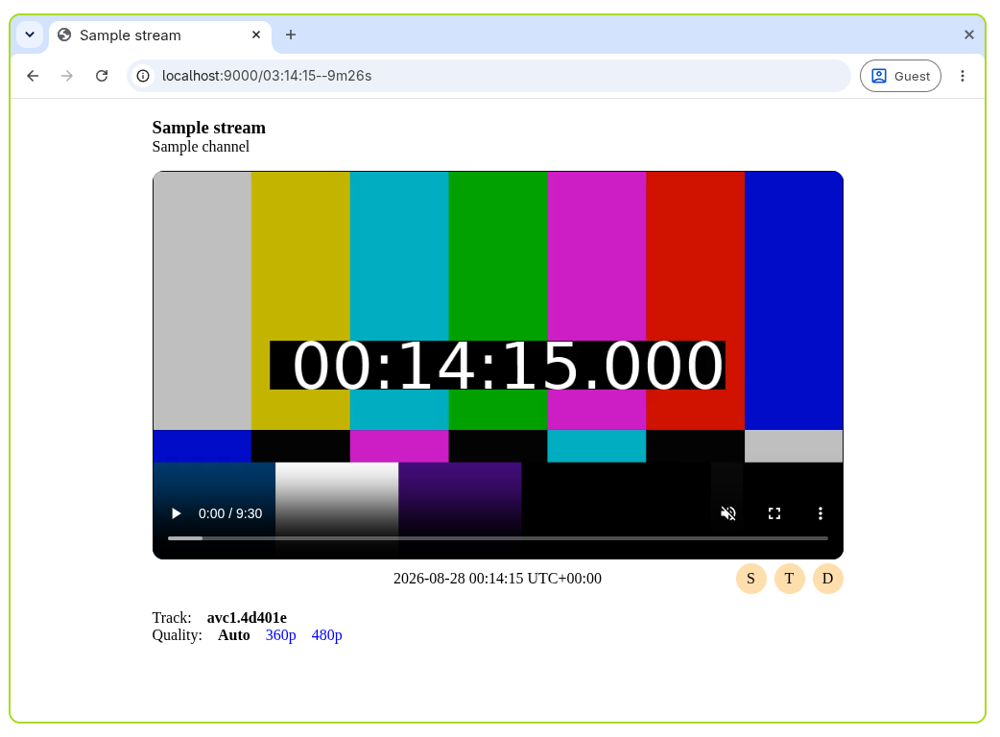

Play a stream in the browser¶
Ypb includes a built-in dash.js web player for watching live streams and rewinding to past moments without downloading anything.

Prerequisites¶
ypbinstalled locally, or running in a container
Run the player¶
- Run the web player for a live stream:
- Open
http://localhost:9000in your browser. This plays the live edge of the stream.
Rewind to a past moment¶
To jump to a specific time instead of the live edge, add it to the path:
See Specifying the rewind time for the accepted formats.
Set the output timezone¶
By default, the playhead and output timestamps are shown in UTC. To use a
different one, add the tz query parameter:
Correct for streaming latency¶
YouTube live streams usually lag behind real time due to latency mode, network
conditions, etc. The latency (or l) query parameter corrects for this by
locating requested moments later by the given number of seconds:
See Correcting for streaming latency for details.
Use the player buttons¶
Below the video, three buttons are available:
| Button | Action |
|---|---|
S |
Take a screenshot of the current frame |
T |
Copy the current timestamp to the clipboard |
D |
Copy a download command for the interval |